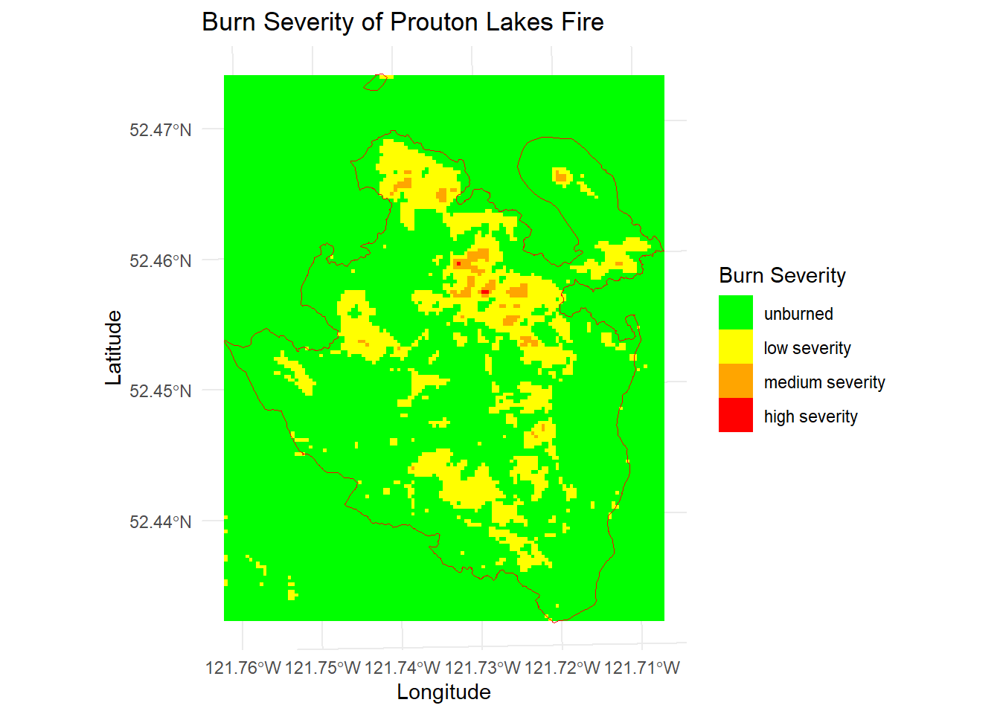

library(terra)
library(sf)
library(readr)
library(stringr)
library(lubridate)
library(dplyr)
library(tidyr)
library(ggplot2)
library(bfast)Analysis of Burn Severity and Vegetation Recovery at Prouton Lake, BC
The background of the Prouton Lake and fire severity
Content details go here.
Deliverables information goes here.
Running Code
To begin with, I loaded the necessary library used for this analysis task.
Read the data files to investigate the data and extract the information about total area burned in 2017
h_fire_ply_polygon <- st_read("C:/Users/hphung.stu/Downloads/GEM520/Labs/Lab8/lab8_finalDemonstrationOfRSkills-assign/data/PROT_HISTORICAL_FIRE_POLYS_SP/H_FIRE_PLY_polygon.shp", quiet = TRUE)
# Extract the data for the year 2017
fire_2017 <- h_fire_ply_polygon %>%
filter(FIRE_YEAR == 2017)
# Number of fire
number_of_fire <- nrow(fire_2017)
print(number_of_fire)[1] 342# Total land area burned
total_area_burned <- sum(fire_2017$SIZE_HA)
print(total_area_burned)[1] 1222205# Create a bar plot showing total area burned per year in BC
fire_by_year <- h_fire_ply_polygon %>%
st_drop_geometry() %>%
group_by(FIRE_YEAR, FIRE_CAUSE) %>%
summarize(TOTAL_AREA = sum(SIZE_HA, na.rm = TRUE))# Create a bar plot showing total area burned per year in BC
ggplot(fire_by_year, aes(x = FIRE_YEAR, y = TOTAL_AREA, fill = FIRE_CAUSE)) +
geom_bar(stat = "identity") +
scale_fill_brewer(palette = "Set1") +
labs(x = "Year", y = "Total Area Burned (Hectares)",
title = "Total Area Burned per Year in BC by Fire Cause") +
theme_minimal() +
theme(axis.text.x = element_text(angle = 45, hjust = 1))# Find the burned area at Prouton Lake by ID = C30870
burned_area_ID <- h_fire_ply_polygon$FIRE_NO == "C30870"
prouton_fire <- h_fire_ply_polygon[burned_area_ID, ]
print(prouton_fire$SIZE_HA)[1] 859.3# List all L2 product directories
l2_directories <- list.dirs("C:/Users/hphung.stu/Downloads/GEM520/Labs/Lab8/lab8_finalDemonstrationOfRSkills-assign/data/Landsat 8 OLI_TIRS C2 L2",
full.names = TRUE,
recursive = FALSE)
# Use prouton_fire as fire extent object
prouton_lake_fire_extent <- prouton_fire
for (dir in l2_directories) {
product_id <- basename(dir)
# Load surface reflectance bands
sr_files <- list.files(dir, pattern = "_SR_B[1-7].TIF$", full.names = TRUE)
sr_stack <- rast(sr_files)
# Load QA_PIXEL layers
qa_file <- list.files(dir, pattern = "_QA_PIXEL.TIF$", full.names = TRUE)
qa_layer <- rast(qa_file)
# Mask pixels that do not have the value 21824
sr_masked <- mask(sr_stack, qa_layer == 21824)
# Crop to Prouton Lakes fire extent
prouton_lake_fire_extent <- st_transform(prouton_lake_fire_extent, crs(sr_masked)) # Match the crs
sr_cropped <- crop(sr_masked, prouton_lake_fire_extent)
# Calculate NDVI
ndvi <- (sr_cropped[[5]] - sr_cropped[[4]]) / (sr_cropped[[5]] + sr_cropped[[4]])
# Calculate NBR
nbr <- (sr_cropped[[5]] - sr_cropped[[7]]) / (sr_cropped[[5]] + sr_cropped[[7]])
# Save outputs
writeRaster(sr_cropped, filename = file.path("C:/Users/hphung.stu/Downloads/GEM520/Labs/Lab8/lab8_finalDemonstrationOfRSkills-assign/output/LC08_L2SP_048023_SR",
paste0(product_id, "_SR.tif")),
overwrite = TRUE)
writeRaster(ndvi, filename = file.path("C:/Users/hphung.stu/Downloads/GEM520/Labs/Lab8/lab8_finalDemonstrationOfRSkills-assign/output/LC08_L2SP_048023_NDVI",
paste0(product_id, "_NDVI.tif")),
overwrite = TRUE)
writeRaster(nbr, filename = file.path("C:/Users/hphung.stu/Downloads/GEM520/Labs/Lab8/lab8_finalDemonstrationOfRSkills-assign/output/LC08_L2SP_048023_NBR",
paste0(product_id, "_NBR.tif")),
overwrite = TRUE)
}# Extract the date from SR file
flist_sr <- list.files("C:/Users/hphung.stu/Downloads/GEM520/Labs/Lab8/lab8_finalDemonstrationOfRSkills-assign/output/LC08_L2SP_048023_SR",
pattern = "tif$",
full.name = TRUE)
fname_sr <- basename(flist_sr)
date_sr <- str_sub(fname_sr, start = 18, end = 25)
date_object_sr <- lubridate::as_date(date_sr,
format = "%Y%m%d")
# Pre-fire and post-fire images
pre_fire <- rast("C:/Users/hphung.stu/Downloads/GEM520/Labs/Lab8/lab8_finalDemonstrationOfRSkills-assign/output/LC08_L2SP_048023_SR/LC08_L2SP_048023_20150707_20200909_02_T1_SR.tif")
post_fire <- rast("C:/Users/hphung.stu/Downloads/GEM520/Labs/Lab8/lab8_finalDemonstrationOfRSkills-assign/output/LC08_L2SP_048023_SR/LC08_L2SP_048023_20180715_20200831_02_T1_SR.tif")# Create true color composite
plotRGB(pre_fire, r = 4, g = 3, b = 2, stretch = "lin")
plotRGB(post_fire, r = 4, g = 3, b = 2, stretch = "lin")
# List all the NDVI files
ndvi_files <- list.files("C:/Users/hphung.stu/Downloads/GEM520/Labs/Lab8/lab8_finalDemonstrationOfRSkills-assign/output/LC08_L2SP_048023_NDVI",
pattern = "tif$",
full.name = TRUE)
length(ndvi_files)[1] 35fname_ndvi <- basename(ndvi_files) # extract the file name from the full file path
fname_ndvi[1:5][1] "LC08_L2SP_048023_20130701_20200912_02_T1_NDVI.tif"
[2] "LC08_L2SP_048023_20130717_20200912_02_T1_NDVI.tif"
[3] "LC08_L2SP_048023_20130802_20200912_02_T1_NDVI.tif"
[4] "LC08_L2SP_048023_20130818_20200913_02_T2_NDVI.tif"
[5] "LC08_L2SP_048023_20140704_20200911_02_T1_NDVI.tif"# Extract year and month from NDVI file names
ndvi_dates_extract <- str_sub(fname_ndvi, start = 18, end = 25)
ndvi_dates <- as_date(ndvi_dates_extract, format = "%Y%m%d")
ndvi_years <- lubridate::year(ndvi_dates)
ndvi_months <- lubridate::month(ndvi_dates)
# Filter for July and August of NDVI files
ndvi_july_august <- ndvi_files[ndvi_months %in% c(7,8)]
years_july_august_ndvi <- ndvi_years[ndvi_months %in% c(7,8)]
# Group the file by year and calculate mean composite for NDVI
yearly_composites_ndvi <- list()
for (year in unique(years_july_august_ndvi)) {
year_files_ndvi <- ndvi_july_august[years_july_august_ndvi == year]
raster_stack_ndvi <- rast(year_files_ndvi)
yearly_composite_ndvi <- app(raster_stack_ndvi, mean, na.rm = TRUE)
yearly_composites_ndvi[[as.character(year)]] <- yearly_composite_ndvi
}# List all the NBR files
nbr_files <- list.files("C:/Users/hphung.stu/Downloads/GEM520/Labs/Lab8/lab8_finalDemonstrationOfRSkills-assign/output/LC08_L2SP_048023_NBR",
pattern = "tif$",
full.name = TRUE)
length(nbr_files)[1] 35fname_nbr <- basename(nbr_files)
fname_nbr[1:5][1] "LC08_L2SP_048023_20130701_20200912_02_T1_NBR.tif"
[2] "LC08_L2SP_048023_20130717_20200912_02_T1_NBR.tif"
[3] "LC08_L2SP_048023_20130802_20200912_02_T1_NBR.tif"
[4] "LC08_L2SP_048023_20130818_20200913_02_T2_NBR.tif"
[5] "LC08_L2SP_048023_20140704_20200911_02_T1_NBR.tif"# Extract year and month from NBR file names
nbr_dates_extract <- str_sub(fname_nbr, start = 18, end = 25)
nbr_dates <- as_date(nbr_dates_extract, format = "%Y%m%d")
nbr_years <- lubridate::year(nbr_dates)
nbr_months <- lubridate::month(nbr_dates)
# Filter for July and August of NBR files
nbr_july_august <- nbr_files[nbr_months %in% c(7,8)]
years_july_august_nbr <- nbr_years[nbr_months %in% c(7,8)]
# Group the file by year and calculate mean composite for NBR
yearly_composites_nbr <- list()
for (year in unique(years_july_august_nbr)) {
year_files_nbr <- nbr_july_august[years_july_august_nbr == year]
raster_stack_nbr <- rast(year_files_nbr)
yearly_composite_nbr <- app(raster_stack_nbr, mean, na.rm = TRUE)
yearly_composites_nbr[[as.character(year)]] <- yearly_composite_nbr
}# Prouton Lake fire extent CRS matching
prouton_lake_fire_extent <- st_transform(prouton_fire,
crs(yearly_composites_ndvi[[1]]))
# Calculate average NDVI for each year
avg_ndvi_per_year <- data.frame(Year = integer(), Avg_NDVI = numeric())
for (year in names(yearly_composites_ndvi)) {
composite <- yearly_composites_ndvi[[year]]
masked <- mask(composite, vect(prouton_lake_fire_extent))
avg_ndvi <- global(masked, mean, na.rm = TRUE)$mean
avg_ndvi_per_year <- rbind(avg_ndvi_per_year,
data.frame(Year = as.integer(year),
Avg_NDVI = avg_ndvi))
}# Plot
ggplot(avg_ndvi_per_year, aes(x = Year, y = Avg_NDVI)) +
geom_point() +
geom_line(group = 1) +
labs(x = "Year", y = "Average NDVI",
title = "Average NDVI Across Prouton Lakes Fire (2013-2021)") +
theme_minimal() +
scale_x_continuous(breaks = seq(min(avg_ndvi_per_year$Year),
max(avg_ndvi_per_year$Year),
by = 1))# Extract pre-fire 2015 and post fire 2018 NBR
nbr_2015 <- yearly_composites_nbr[["2015"]] # Pre-fire NBR
nbr_2018 <- yearly_composites_nbr[["2018"]] # Post-fire NBR
# Calculate dNBR
dnbr <- nbr_2015 - nbr_2018
# Define reclassification matrix for burn severity
reclass_matrix <- matrix(c(-0.2, 0.15, 1,
0.15, 0.25, 2,
0.25, 0.3, 3,
0.3, 1, 4),
byrow = TRUE, ncol = 3)
# Reclassify dNBR
burn_severity <- classify(dnbr, reclass_matrix)
# Set levels to the reclassified raster
levels(burn_severity) <- data.frame(id = c(1, 2, 3, 4),
label = c("unburned",
"low severity",
"medium severity",
"high severity"))# Convert raster to dataframe for ggplot
severity_df <- as.data.frame(burn_severity, xy = TRUE)
# Plot dNBR raster by using the severity_df data
ggplot() +
geom_raster(data = severity_df, aes(x = x, y = y, fill = label)) +
geom_sf(data = st_as_sf(prouton_lake_fire_extent), fill = NA, color = "red") +
scale_fill_manual(values = c("green", "yellow", "orange", "red"),
name = "Burn Severity") +
theme_minimal() +
labs(title = "Burn Severity of Prouton Lakes Fire",
x = "Longitude", y = "Latitude") +
coord_sf()
Post-fire vegetation recovery
# Convert burn severity raster to polygons
burn_severity_masked <- mask(burn_severity, vect(prouton_lake_fire_extent)) # Mask to the fire extent
burn_severity_polygons <- as.polygons(burn_severity_masked, dissolve = TRUE)
# Create an ID column in burn_severity_polygons
burn_severity_polygons$ID <- 1:nrow(burn_severity_polygons)
# Extract NDVI values for each year and burn severity class
years <- c(2018, 2019, 2020, 2021)
ndvi_values <- list()
for (year in years) {
ndvi_raster <- yearly_composites_ndvi[[as.character(year)]]
# Extract NDVI values by burn severity polygons
extracted_values <- terra::extract(ndvi_raster, burn_severity_polygons,
xy = TRUE, ID = TRUE)
# Add burn severity class and year to extracted data
extracted_values <- merge(extracted_values, burn_severity_polygons, by = "ID",
all.x = TRUE)
# Add the year column to the extracted data
extracted_values$year <- year
ndvi_values[[as.character(year)]] <- extracted_values
}
# Combine data for all years into a single dataframe
ndvi_all_years <- do.call(rbind, ndvi_values)
head(ndvi_all_years) ID mean x y label year
2018.1 1 0.2663470 585420 5814480 unburned 2018
2018.2 1 0.2561202 585450 5814480 unburned 2018
2018.3 1 0.2355936 585390 5814450 unburned 2018
2018.4 1 0.2287356 585420 5814450 unburned 2018
2018.5 1 0.2395178 585450 5814450 unburned 2018
2018.6 1 0.2413820 585480 5814450 unburned 2018# Ensure burn severity is an ordered factor
ndvi_all_years$severity <- factor(ndvi_all_years$label,
levels = c("unburned",
"low severity",
"medium severity",
"high severity"),
ordered = TRUE)# Plot yearly NDVI composites
for (year in years) {
plot(yearly_composites_ndvi[[as.character(year)]],
main = paste("Yearly NDVI Composite -", year),
range = c(0, 0.5)) # Set the same value range for all plots
}
# Create a boxplot of NDVI distributions
ggplot(ndvi_all_years, aes(x = severity, y = mean, fill = severity)) +
geom_boxplot() +
facet_wrap(~ year) +
scale_fill_manual(values = c("unburned" = "green",
"low severity" = "yellow",
"medium severity" = "orange",
"high severity" = "red"),
name = "Burn Severity") +
labs(title = "Distribution of NDVI Values by Burn Severity Class",
x = "Burn Severity Class",
y = "NDVI") +
theme_minimal() +
theme(axis.text.x = element_text(angle = 45, hjust = 1))